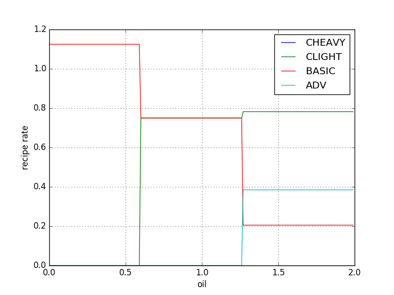

1. Basics
2. Complex recipes
3. Handling multiple unknowns
4. No solution found
5. Linear programming
Recipes consist of three major things: A crafting time, one or more products, and one or more ingredients. Products and ingredients consist of an amount and an item.
The vast majority of the recipes in the game will produce a single instance of a single item. Several will make multiple copies of an item at a time, and a bare handful will make multiple distinct items at once. The recipe for the electronic circuit, shown above, will produce a single electronic circuit each time it is completed.
Copper cables and iron plates have their own recipes, in turn.
And then copper cables require copper plate, the recipe for which looks like this:
Iron ore and copper ore don't have a recipe, and are mined directly from deposits in the game world.
If one were to represent the complete tree of items and the ratios required of each of their prerequisites, it would look something like this:
The relationship between crafting times and ratios is straightforward, but deserves mentioning. The ratios shown above are best thought of as a series of rates. For instance, if you wanted to produce one electronic circuit per second, then you would also need to make three copper cables per second, one-and-a-half copper plates per second, and so on. These rates would remain constant regardless of the crafting times of the individual recipes. Recipes with longer crafting times will simply require more assemblers or furnaces working in parallel in order to satisfy the desired rate.
(There is the additional detail that different types of assemblers and furnaces have different crafting speeds. Working through the arithmetic here is outside the scope of this post, however.)
A tree similar to the above is sufficient for calculating the production ratios between the majority of the recipes in the game. However, the complete recipe graph hides a few complex corner-cases, and the technique shown above will fail once it runs into the weirder parts of the graph.
But, inevitably, you will run into the oil production pipeline.
What a pain in the ass. These recipes violate a number of assumptions that it would be easy to make if you looked exclusively at the non-oil parts of the recipe graph.
Notice how the fluids produced by these recipes (heavy oil, light oil, and petroleum gas; collectively referred to as the oil products) are each created by multiple recipes. The basic and advanced oil processing recipes are also in that exclusive class of recipes which produce multiple, distinct items.
There are some other recipes closely related to the oil pipeline which add to the annoyance. Each of the three oil products may be turned into solid fuel, via three additional recipes. There is also a system in which crude oil may be placed into barrels, and then the full barrels may be emptied again. This is accomplished via a pair of recipes that depend on one another. As a consequence, the recipe graph is not a DAG. Any algorithm that wants to work with the recipe graph in a general sense must be prepared to deal with cycles.
So: Suppose we want to make an item that depends on one of the oil products. A good example would be plastic.
If we want to produce plastic bars at a given rate, we will require petroleum gas at 1.5 times that rate. However, we can obtain petroleum gas from three different recipes, and some of those recipes ultimately depend on each other, and they also end up producing the other oil products at the same time, which we can turn into more petroleum gas via the cracking recipes.
How can we calculate the optimal selection of recipes to produce this with? And what if we actually want to use more than one oil product, at some specific ratio?
It turns out that this is a straightforward problem of linear algebra. The key is representing the recipes in a useful way. We can encode the recipe graph using a matrix like the following.
| -40 | 0 | 30 | 10 | 0 | 0 | |
| 30 | -30 | 30 | 45 | 0 | 0 | |
| 0 | 20 | 40 | 55 | 0 | 0 | |
| -30 | -30 | 0 | -50 | 1 | 0 | |
| 0 | 0 | -100 | -100 | 0 | 1 |
Now let's use this matrix to determine the optimum ratios for some series of oil products. Completely arbitrarily, let's say we want to produce 45 units of petroleum gas, and 10 units of heavy oil, per unit time. We can represent this as an item vector:
| 10 | |
| 0 | |
| 45 | |
| 0 | |
| 0 |
| result | ||||||
|---|---|---|---|---|---|---|
| 1 | 0 | 0 | 0 | 0 | -13/400 | -23/12 |
| 0 | 1 | 0 | 0 | 0 | -7/400 | -1/4 |
| 0 | 0 | 1 | 0 | 0 | -3/50 | -10/3 |
| 0 | 0 | 0 | 1 | 0 | 1/20 | 10/3 |
| 0 | 0 | 0 | 0 | 1 | 1 | 305/3 |
To get a better sense of what this looks like, let's plot the system of equations represented by the above matrix.
■ ■ ■ ■ ■
In mathematical terms, let's call the recipe matrix A, the vector of ratios we want to solve for x, and the vector of desired outputs b. Together, these satisfy the relationship Ax = b. However, it is very important that all of the components of x are positive. A negative value in x would represent trying to operate a recipe in reverse, which is not something that makes sense in the context of the game.
Thus, the vertical lines in the above plot represent the minimum and maximum values for xcrude oil such that all of the values in x will be greater than or equal to zero. Or, in game terms, they represent the minimum and maximum amounts of oil we could spend in order to produce 45 units of petroleum gas and 1 unit of heavy oil, with no other oil products left over.
In order to choose a value for xcrude oil, we need to establish an order of priorities. Ultimately, we are trying to find the most efficient production chain for the items we want to make, where efficiency is defined as using as few resources as possible. But, as we can see with water and crude oil in the above plot, sometimes resources are used in inverse proportion to one another. Using less crude oil would mean using more water, and vice versa.
Given that crude oil can be annoying to acquire, and water is effectively free, it makes sense to define, a priori, that optimizing for crude oil has a higher priority than optimizing for water. Therefore, we can say that the optimum value for xcude oil is the minimum possible one, as shown in the plot above.
Taking that value as a solution, our final value for x is this.
| 0.00 | 0.78 | 0.21 | 0.38 | 42.69 | 58.97 |
Let's start with a more constrained example. Let's take the oil production matrix above, and add the recipes for solid fuel.
| -40 | 0 | 30 | 10 | -20 | 0 | 0 | 0 | 0 | |
| 30 | -30 | 30 | 45 | 0 | -10 | 0 | 0 | 0 | |
| 0 | 20 | 40 | 55 | 0 | 0 | -20 | 0 | 0 | |
| 0 | 0 | 0 | 0 | 1 | 1 | 1 | 0 | 0 | |
| -30 | -30 | 0 | -50 | 0 | 0 | 0 | 1 | 0 | |
| 0 | 0 | -100 | -100 | 0 | 0 | 0 | 0 | 1 |
| result | |||||||||
|---|---|---|---|---|---|---|---|---|---|
| 1 | 0 | 0 | 0 | 0 | 0 | 5/2 | -1/20 | -33/400 | -50 |
| 0 | 1 | 0 | 0 | 0 | 0 | 5/22 | -3/220 | -137/4400 | -450/11 |
| 0 | 0 | 1 | 0 | 0 | 0 | 18/11 | -1/55 | -43/550 | -600/11 |
| 0 | 0 | 0 | 1 | 0 | 0 | -18/11 | 1/55 | 3/44 | 600/11 |
| 0 | 0 | 0 | 0 | 1 | 0 | -37/11 | 9/110 | 9/110 | 500/11 |
| 0 | 0 | 0 | 0 | 0 | 1 | 48/11 | -9/110 | -9/110 | 600/11 |
Items come from recipes. In the normal case, each item is produced by one recipe. The oil production pipeline violates this assumption, by having three items that are produced by four recipes. Thus, its recipe matrix is not square, and calculations involving oil end up with a single unknown. In practice, regardless of the order in which you happen to arrange the columns of the matrix, this unknown is really asking: Which oil product do I need to use the least?
To put that another way: Having more recipes than items results from having multiple ways of making an item. The unknown that results from trying to solve the resulting recipe matrix represents the choice between those recipes.
There are three possibilties when trying to choose between these recipes.
We saw this in the last section, when the ratio for heavy oil cracking turned out to be zero. This result can be understood intuitively: We required heavy oil as part of the output, and advanced oil processing produces heavy oil at an extremely low ratio, while making the other products at higher ratios. It therefore follows that production of heavy oil would be the bottleneck, and we would have no excess heavy oil to pass on to the heavy oil cracking recipe.
There is always a bottleneck.
Applying that same intuition to the result above, we can guess which three recipes will end up being zero. First, notice that light oil produces solid fuel at a vastly more advantageous ratio (10:1) than either of the other two products (20:1). Then notice that the ratio for converting from heavy oil to light oil (40:30) is more advantageous than converting from heavy oil directly to solid fuel.
So: The first zero recipe is the solid fuel from heavy oil recipe. It's more efficient to convert all of our heavy oil to light oil.
On the other hand, we have petroleum gas, which we will be producing as an unavoidable byproduct of the oil processing recipes, and so we're forced to make a certain proportion of our solid fuel from it. Converting our light oil into petroleum gas would be much less efficient than just converting all of the light oil directly into solid fuel, and so the second zero recipe is light oil cracking.
Finally, given that we really want all of the light oil we can get our hands on, we can look back at the oil processing recipes and note that basic oil processing makes less of it than advanced oil processing does. Thus, the third zero recipe is basic oil processing.
But how can we calculate this automatically?
In the previous section, we essentially determined the optimum value for x by trying to zero out each value in x, and checking whether the result was valid. This yielded two valid results (the minimum and maximum shown in the graph), from which we chose the optimum one.
This can be generalized for multiple unknowns by choosing every combination of N elements from x, finding solutions for the rest of x when those elements are zero, and then seeing if that solution is valid (i.e. if it contains no negative elements). This will, more than likely, yield multiple valid solutions, and so the final step is to choose the most optimal solution.
This process can be optimized slightly by only considering those recipes that have at least one product that is produced by multiple recipes. The only recipes that can be considered to be zero in this process are those which have alternatives. The game's complete recipe graph has 215 recipes with 11 unknowns. Computing this naively would yield over 8×1017 possibilties. However, the game only has 22 recipes which actually need to be considered, which brings the number of possibilities down to 705,432. Further reductions in the number of possibilities are possible as well, since some combinations of zeros are mutually exclusive, but this is outside the scope of this post. (The bulk of these excess recipes come from the fluid barreling system, which can largely be ignored as redundant in most production chains.)
For the purposes of our example, all this means is that we do not need to consider the possibility that water or crude oil will be zero (although they may be zero as a natural consequence of other columns being zero). If we take our 7 remaining recipes and set three of them to zero at a time, we get 35 possible solutions, of which the following are valid:
| 0.00 | 0.00 | 0.00 | 12.90 | 6.45 | 58.06 | 35.48 | 645.16 | 1290.32 | The "don't crack anything" solution. |
| 0.00 | 0.00 | 15.38 | 0.00 | 23.08 | 46.15 | 30.77 | 0.00 | 1538.46 | The same, but with basic oil processing. |
| 0.00 | 31.58 | 0.00 | 21.05 | 10.53 | 0.00 | 89.47 | 2000.00 | 2105.26 | Crack all the light oil to petroleum gas. |
| 0.00 | 22.22 | 22.22 | 0.00 | 33.33 | 0.00 | 66.67 | 666.67 | 2222.22 | The same, but with basic oil processing. |
| 3.12 | 0.00 | 0.00 | 12.50 | 0.00 | 65.62 | 34.38 | 718.75 | 1250.00 | The winner! |
| 10.34 | 0.00 | 13.79 | 0.00 | 0.00 | 72.41 | 27.59 | 310.34 | 1379.31 | Crack all the heavy oil, but use basic oil processing. |
| 5.56 | 38.89 | 0.00 | 22.22 | 0.00 | 0.00 | 100.00 | 2444.44 | 2222.22 | All petroleum gas, all the time. |
| 20.00 | 46.67 | 26.67 | 0.00 | 0.00 | 0.00 | 100.00 | 2000.00 | 2666.67 | The same, but with basic oil processing. |
If we think of the recipe matrix as a vector space, there are some places we just can't reach. In the vanilla game, this is entirely the fault of the oil processing recipes.
To illustrate this, here is a somewhat simplified oil processing recipe graph, with only heavy oil and light oil.
| -40 | 30 | 10 | |
| 30 | 30 | 45 |
The situation with the complete recipe graph is analogous, except with a third dimension representing petroleum gas.
This can be overcome by introducing new vectors which can "waste" any given item. So long as these matrix columns are treated with the lowest priority, they should be used only when required.
The chief difficulty of representing a Factorio recipe graph as a linear program lies in crafting the objective function. The linear algebra approach described in the previous sections has the advantage of returning each possible solution as a tuple of costs, which may be compared to each other in whichever way is found most convenient.
When specifying the recipe graph as a linear program, however, the costs have to be specified as a linear combination, which ultimately has to yield a scalar value. There is a way to do this, but first let's go through the relatively simple example of the oil processing pipeline.
Here's a matrix we used earlier:
| output | |||||||
|---|---|---|---|---|---|---|---|
| -40 | 0 | 30 | 10 | 0 | 0 | 10 | |
| 30 | -30 | 30 | 45 | 0 | 0 | 0 | |
| 0 | 20 | 40 | 55 | 0 | 0 | 45 | |
| -30 | -30 | 0 | -50 | 1 | 0 | 0 | |
| 0 | 0 | -100 | -100 | 0 | 1 | 0 |
Minimize C = xcrude oil subject to:
-40x1 + 30x3 + 10x4 ≥ 10Note that, at this point, we are specifying crude oil as the only cost because we know ahead of time that we want it to be so. I will address the general case of determining a cost function later.
30x1 - 30x2 + 30x3 + 45x4 ≥ 0
20x2 + 40x3 + 55x4 ≥ 45
-30x1 - 30x2 - 50x4 + xwater ≥ 0
-100x3 - 100x4 + xcrude oil ≥ 0
∀i: xi ≥ 0
The tableau for our linear program looks like this:
| s1 | s2 | s3 | s4 | s5 | C | answer | ||||||
|---|---|---|---|---|---|---|---|---|---|---|---|---|
| -40 | 0 | 30 | 10 | 0 | 0 | -1 | 0 | 0 | 0 | 0 | 0 | 10 |
| 30 | -30 | 30 | 45 | 0 | 0 | 0 | -1 | 0 | 0 | 0 | 0 | 0 |
| 0 | 20 | 40 | 55 | 0 | 0 | 0 | 0 | -1 | 0 | 0 | 0 | 45 |
| -30 | -30 | 0 | -50 | 1 | 0 | 0 | 0 | 0 | -1 | 0 | 0 | 0 |
| 0 | 0 | -100 | -100 | 0 | 1 | 0 | 0 | 0 | 0 | -1 | 0 | 0 |
| 0 | 0 | 0 | 0 | 0 | 1 | 0 | 0 | 0 | 0 | 0 | 1 | 0 |
| s1 | s2 | s3 | s4 | s5 | C | answer | ||||||
|---|---|---|---|---|---|---|---|---|---|---|---|---|
| -400/13 | 0 | 0 | 0 | 0 | 1 | -50/39 | -80/117 | -40/39 | 0 | -1 | 0 | 2300/39 |
| -7/13 | 1 | 0 | 0 | 0 | 0 | 1/390 | 5/234 | -7/390 | 0 | 0 | 0 | 61/78 |
| 400/13 | 0 | 0 | 0 | 1 | 0 | 21/13 | 5/39 | -17/13 | -1 | 0 | 0 | 555/13 |
| 20/13 | 0 | 0 | 1 | 0 | 0 | 2/65 | -2/195 | -1/65 | 0 | 0 | 0 | 5/13 |
| -24/13 | 0 | 1 | 0 | 0 | 0 | -17/390 | 2/585 | 1/195 | 0 | 0 | 0 | 8/39 |
| 400/13 | 0 | 0 | 0 | 0 | 0 | 50/39 | 80/117 | 40/39 | 0 | 1 | 1 | -2300/39 |
| 0.00 | 0.78 | 0.21 | 0.38 | 42.69 | 58.97 |
Now let's circle back to the cost function.
Ultimately, we want to prioritize our resource usage according to an a priori notion of how "difficult" each resource is to acquire. Crude oil is somewhat difficult to obtain compared to water, which is effectively free. Therefore, our cost function should value crude oil more highly than water. The question is: How much more?
Let's see what happens to the above solution if we define water to have a fixed cost of 1, while adjusting the cost of crude oil:

As we increase the cost coefficient of oil, the solution jumps, discontinuously, from one value for x to another. Past a certain point, it settles on a single solution, which will remain the same as the cost coefficient increases to infinity. This solution is the same one we get when we set water's cost to 0 and crude oil's cost to 1.
The cost function is a linear function, and the ratio of these costs defines the slope of the resulting line. As that slope changes, the cost function will reach different vertices on the boundary of the feasible region. Once the slope exceeds that final critical value, the vertex it will reach will remain the same no matter how much steeper that slope becomes, all the way up to infinity (a completely vertical line).
It follows, then, that the ratio in the costs between these resources may be any value that we know to be greater than or equal to this highest critical ratio. Actually calculating this critical value basically requires a linear program of its own, but it turns out we can assume that it will always be less than the ratio between the largest absolute value in the linear program and the smallest. In the example we've been using, that ratio is 10.
To restate our goal, we want our cost function to represent a lexicographical ordering of our resources: First minimize our use of crude oil, then (if multiple solutions would use equal amounts of crude oil) minimize our use of water. Given this, we can revise our cost function to:
C = xwater + 10xcrude oilThe resulting solution remains the same as above.
Now let's discuss the surplus variables. These represent quantities of items which we produce as surplus, in addition to the amounts we requested. While our priority is still, first and foremost, to minimize our resource expenditures, we also want to avoid making extra items that we don't need to.
For example, if a solution requires producing surplus petroleum gas, this cost function means that converting all of that excess petroleum gas into solid fuel and then claiming that as surplus instead will be an equal solution.
We can avoid this by introducing a new pseudo-item that it costs all recipes to use, and minimizing that use of this value at the lowest priority. Let's call this the recipe tax.
C = 10xwater + 100xcrude oil + xtaxAnd our tableau with this new pseudo-item and cost function ends up looking like this:
| tax | s1 | s2 | s3 | s4 | s5 | C | answer | ||||||
|---|---|---|---|---|---|---|---|---|---|---|---|---|---|
| -40 | 0 | 30 | 10 | 0 | 0 | 0 | -1 | 0 | 0 | 0 | 0 | 0 | 10 |
| 30 | -30 | 30 | 45 | 0 | 0 | 0 | 0 | -1 | 0 | 0 | 0 | 0 | 0 |
| 0 | 20 | 40 | 55 | 0 | 0 | 0 | 0 | 0 | -1 | 0 | 0 | 0 | 45 |
| -30 | -30 | 0 | -50 | 1 | 0 | 0 | 0 | 0 | 0 | -1 | 0 | 0 | 0 |
| 0 | 0 | -100 | -100 | 0 | 1 | 0 | 0 | 0 | 0 | 0 | -1 | 0 | 0 |
| 1 | 1 | 1 | 1 | 0 | 0 | 1 | 0 | 0 | 0 | 0 | 0 | 0 | 0 |
| 0 | 0 | 0 | 0 | 10 | 100 | 1 | 0 | 0 | 0 | 0 | 0 | 1 | 0 |
One possible additional feature is placing multiple input items at the same priority level. If we define the ratio described above as R, and the number of items at each priority level as N, then the coefficient for each priority level can be defined something like this:
Pn = Pn - 1 × R × Nn - 1Where P1 is defined to be 1.